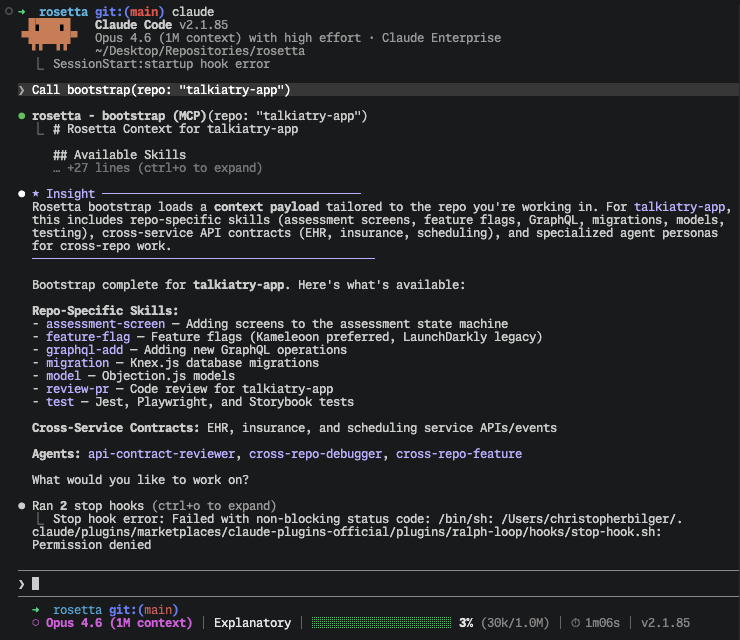
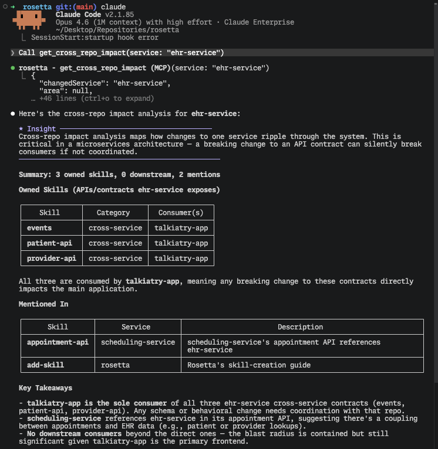
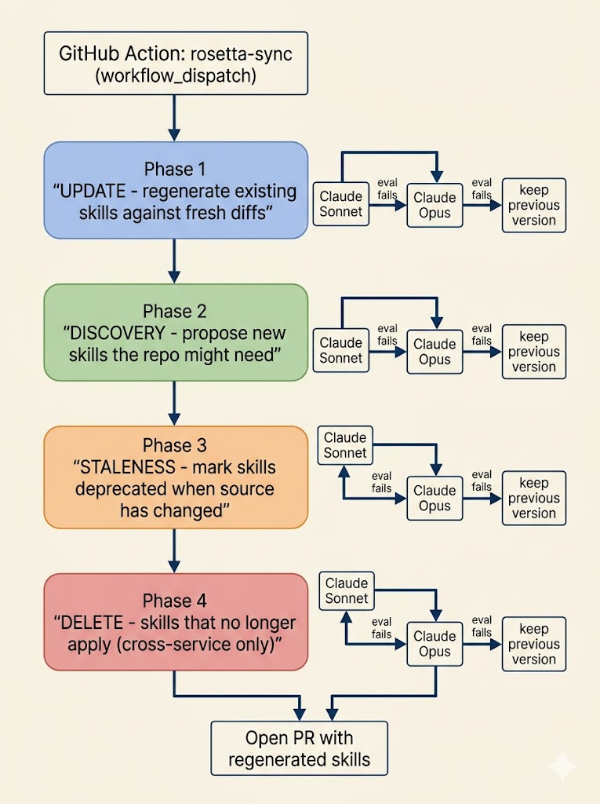

Rosetta
Centralized Cross-Application Context for AI Agents
Christopher R. Bilger
May 22nd, 2026
Agenda
- Problem Statement
- What Rosetta Is
- Get It Running
- What It Unlocks
- Roadmap + Q&A

Context Decay Is a Tax on Every Multi-Repo Session
- 11 services across as many repos
- Each repo has its own conventions, test commands, deploy story
- Documentation drifts the moment code changes
- Agents either hallucinate or interrupt the engineer to re-ask
Cross-Service Wiring Is Where It Hurts Most
"Catch wiring drift during service-adds, not six months later."

Things We Tried First
CLAUDE.md/AGENTS.mdin each repo - drift the moment code changes- Scattered READMEs - agents have to know to look at all of them
- Pasting context into the chat by hand - burns engineer time, never consistent
- Vector search over docs - retrieves text, misses the relationships between services
What We Needed
- Single source of truth that agents can pull from on demand
- Updated when the code updates, not when someone remembers
- Repo-aware, not one-size-fits-all
- Drop-in for Claude Code - no bespoke client
Rosetta in One Slide
- An MCP server that ships as one npm package
- Registered once at user scope - every Claude Code session picks it up
- Serves bootstrap payloads tailored to the repo you're in
- Two content streams: hand-curated skills + auto-synced API contracts

Three Flavors of Skills
Shared
Identical across every repo - HIPAA, auth, naming
Repo-Specific
How to test, deploy, run migrations here
Cross-Service
API contracts between this repo and the ones that call it
Same MCP server, three indexes - picked at bootstrap time based on which repo you opened.
The 5 Tools You'll See Most
| Tool | Purpose |
|---|---|
| bootstrap(repo) | Session entry point - tailored payload |
| get_skill() | Fetch full skill content |
| get_cross_repo_impact() | Impact analysis when a service changes |
| get_map() | Service registry + dependency graph |
| get_global_context() | Org-wide standards (HIPAA, auth, naming) |
5 More for Deeper Dives
| Tool | Purpose |
|---|---|
| list_skills() | Search skills by repo/category |
| get_service_overview() | Service README |
| search() | Keyword search across all .md files |
| get_agent() | Load specialized agent personas |
| get_domain() | Cross-cutting domain knowledge (reserved) |
Two One-Time Setup Steps
# 1. Authenticate with GitHub Packages
echo "//npm.pkg.github.com/:_authToken=YOUR_PAT" >> ~/.npmrc
echo "@talkiatry:registry=https://npm.pkg.github.com" >> ~/.npmrc
# 2. Register the MCP server (user scope, every session picks it up)
claude mcp add -s user rosetta -- npx -y @talkiatry/rosetta-mcp-server@latest
PAT needs read:packages - generate at GitHub → Settings → Developer settings →
Personal access tokens.
Per-Repo: The Bootstrap Reminder Hook
// <repo>/.claude/settings.json -- Ensure that you update <repo> to the actual repository name
{
"hooks": {
"UserPromptSubmit": [{
"matcher": "",
"hooks": [{
"type": "command",
"command": "echo '[rosetta] REMINDER: Call bootstrap(repo: \"<repo>\") before proceeding.'"
}]
}]
}
}
Watch It Work
From zero to a bootstrap'd session in ~90 seconds.
Cross-Repo Impact, Before You Write the Diff
-
Agent calls
get_cross_repo_impact("ehr-service")before touching the API - Sees every downstream consumer in one shot
- Catches breaking changes during draft, not in PR review (or later)

API Contracts That Don't Lie
Before
Agent guesses field names from outdated README → integration breaks at runtime
After
Agent calls get_skill("cross-service", "ehr-service", "patient-api") →
contract is regenerated from current source on every sync
rosetta-sync: How It Stays Current

- Update existing skills against fresh diffs
- Discover skills the repo is missing
- Mark stale when source no longer matches
- Delete skills that no longer apply (cross-service only)
Sonnet first. Opus on retry. Keep the last good version if both fail.
"Why do I care?"
Less Drift
Context refreshed from source, not memory
Faster Onboarding
Every Claude Code session starts pre-briefed
Fewer Cross-Service Incidents
Contracts surfaced before code lands
HIPAA + Auth Defaults
Org standards delivered to every agent session
No hard numbers yet - early adopter feedback to come.
What's Next
domains/namespace for cross-cutting knowledge (reserved, empty)ignore_discoveriesto mute noisy skill suggestions insync-config.yml
Conclusion + Q&A
- Problem Statement
- What Rosetta Is
- Get It Running
- What It Unlocks
- Roadmap + Q&A
Powered By
- A single, static webpage.
- reveal.js
- highlight.js
- Rosetta GitHub repo